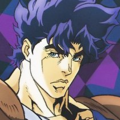
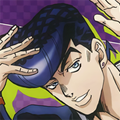
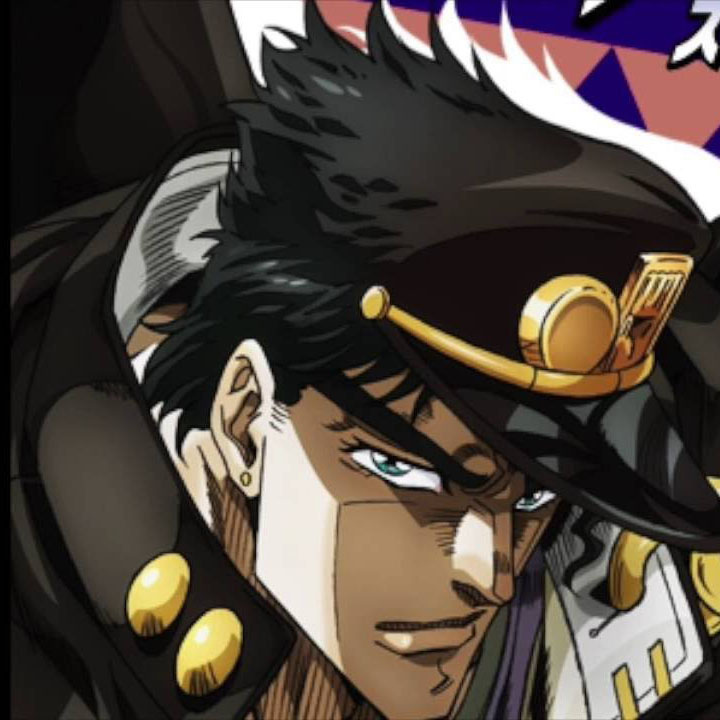

Notícias
-

jolyne
Nascida de Jotaro Kujo e sua mãe sem nome, Jolyne Kujo é a Joestar de sétima geração...
-

Jonathan
Jonathan sendo filho de George Joestar carrega seu sobrenome com orgulho...
-

Josuke
Josuke é convocado por Jotaro para erradicar outros usuários de Stand em sua terra natal...
-

Jotaro
"Ele era um menino tão bom e agora eu não sei o que está acontecendo com ele!" Holly Kujo.